О нас
Лидер рынка колбысных изделий в Кыргызстане
Торговая Марка «Тойбосс» была основана в 2012 году и за этот короткий срок смогла зарекомендовать себя на рынке Кыргызстана как производитель качественной, полезной, а самое главное вкусной мясной продукции.
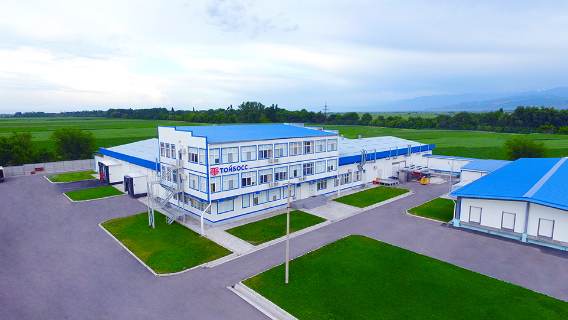Наша компания предлагает не просто высококачественную продукцию, изготовленную из экологически чистых и натуральных продуктов, но и высокий уровень сервиса и своевременные поставки.
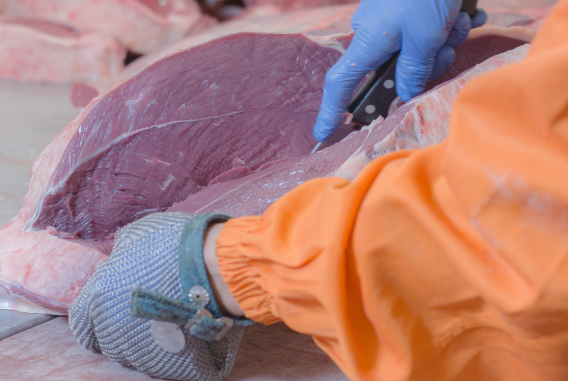Сочетание традиционных рецептов, современных технологий и высоких стандартов производства составляют тот фундамент, на котором развивается наше предприятие. Поддержание стабильного роста уровня качества, строгое соблюдение технологических рецептур и использование исключительно “Халал” продукции – основа производственной деятельности нашей компании. В 2017 году торговая марка “Тойбосс” успешно прошла аудит и признана предприятием, функционирующим в соответствии с законодательством Кыргызской Республики и техническими регламентами Таможенного Союза, с соблюдением системы менеджмента безопасности пищевых продуктов и принципов системы ХАССП, и сертифицирована международной организацией TÜV Thüringen e.V. требованиям ISO 22000:2005, ISO/TS 22002-1:2009 и FSSC 22000. Также производство ведется по принципам халал и сертифицировано ДУМК КР и Государственный стандарт КР.
Наша миссия
Миссия компании заключается в том, чтобы прикладывать все силы для улучшения качества жизни наших потребителей. Мы не останавливаемся на достигнутом! Мы вдохновлены на все новые и новые достижения! Мы не боимся ставить перед собой большие цели. Большие цели способствуют нашему стремлению достигнуть положительного результата и стимулируют нас неустанно следовать им. Мы вносим наш посильный вклад в развитие экономики страны, создавая как можно больше рабочих мест с конкурентоспособными условиями.
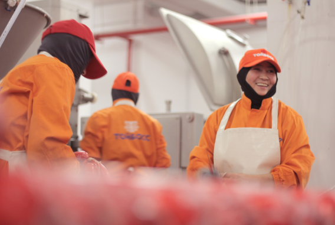Награды
Широкий ассортимент продукции был представлен на Международных выставках. Компания награждалась золотыми медалями как призводитель лучшей колбасной продукции в нашей стране.
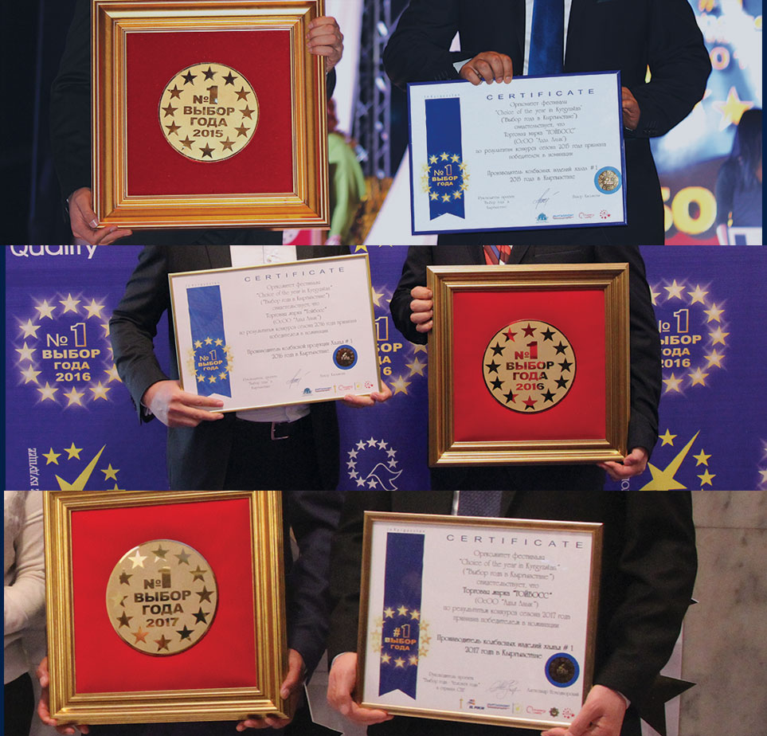Наше производство
В соответствии с техническим регламентом и международным стандартом пищевой безопасности в 2017 году был запущен мясоперерабатывающий завод, соответствующий системе менеджмента FSSC 22000.
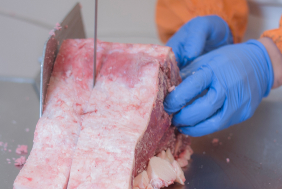 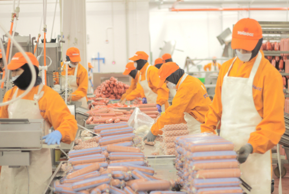 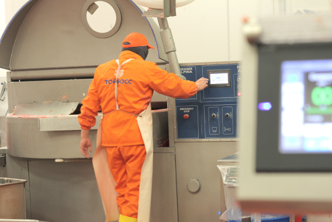Лаборатория
Данное подразделение проводит микробиологические, физико-химические и органолептические испытания продукта и сырья, а также производит санитарные испытания производственного помещения и оборудования.
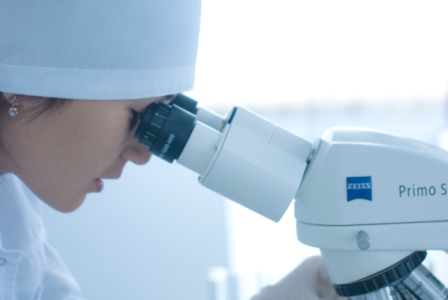 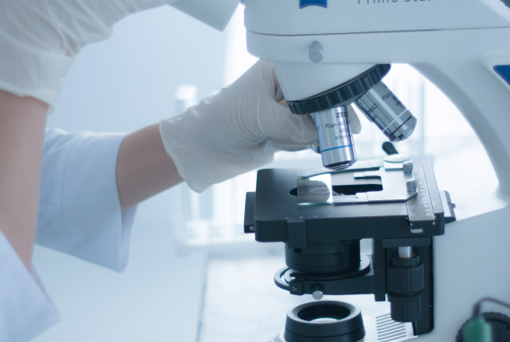Гигиена
Оборудование завода соответствует санитарно-техническим нормам. Персоналом в обязательном порядке соблюдаются санитарно-гигиенические требования. Предусмотрены все условия, необходимые для поддержания чистоты на производстве.
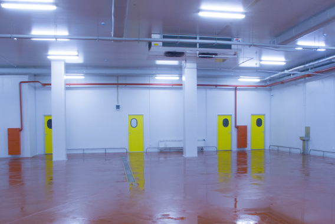 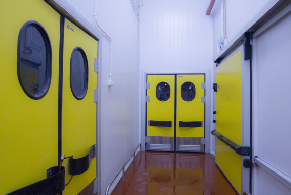 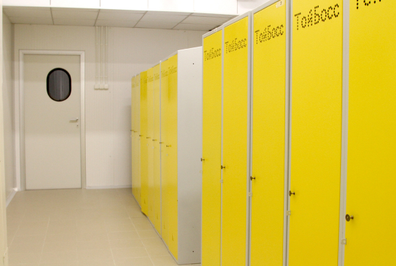Оборудование
Для получения высококачественной продукции завод оснащён современным технологическим оборудованием от ведущих мировых брендов.
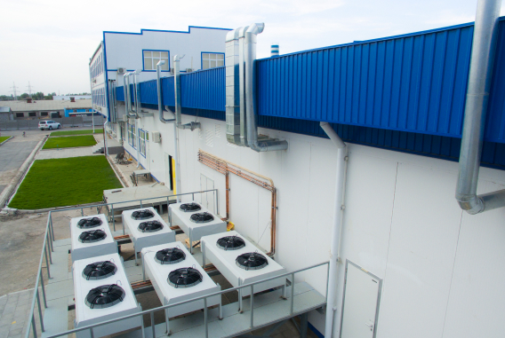Нами применяются самые последние разработки и инновационные технологии для усовершенствования и улучшения процесса производства. За счет применения такого инновационного решения, как рекуперация тепловой энергии, удалось добиться повышения эффективности использования и экономии энергии, а также уменьшения вредных выбросов, что делает наш завод предприятием, не загрязняющим окружающую среду. Соответствие стандартам FSSC 22000.
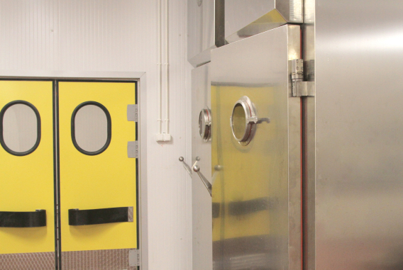Продукция сертифицирована международной организацией TÜV Thüringen e.V. и соответствует требованиям ISO 22000:2005, ISO/TS 22002-1:2009 и FSSC 22000.
Производственное здание
Производственное здание проектировалось и построено с учетом выполняемых производственных процессов. Были учтены потенциальные источники загрязнения и опасности, угрожающие пищевой продукции поступающей из окружающей среды. Планировка внутренних помещений выполнялась с учетом предотвращения перекрёстных загрязнений материалов, продукции и людей. Внутренние конструкции, стены, потолки и полы выполнены из специальных строительных материалов, стойких к агрессивным моющим и чистящим средствам.
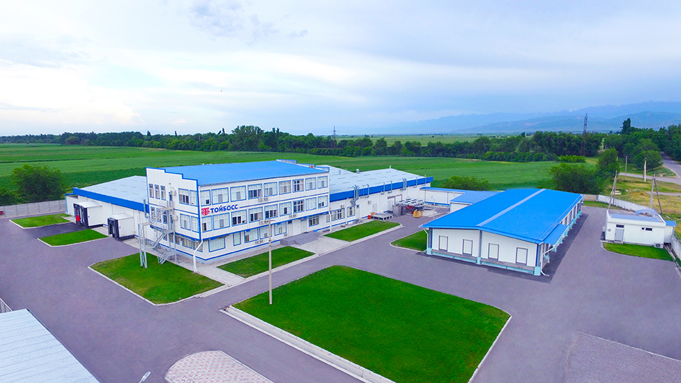Системы обеспечения
Системы обеспечения питьевой водой, воздухом и вентиляцией соответствуют стандартам и микробиологическим требованиям. Качество воздуха, подаваемого в помещения, постоянно контролируется для исключения риска загрязнения. Вентиляционные системы спроектированы таким образом, чтобы поток воздуха из загрязнённых или сырьевых зон не попадал в чистую зону.
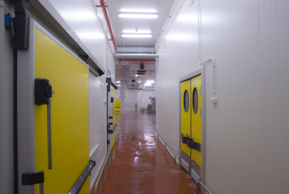Убойный цех
Пропускная способность современного убойного цеха составляет 22 тонны живого веса за одну смену. Цех соответствует законодательству Кыргызской Республики и техническим регламентам Таможенного Союза, с соблюдением принципов системы контроля безопасности пищевых продуктов ХАСCП, и сертифицирован международной организацией TÜV Thüringen e.V. Более того, убойный цех также соответствует требованиям ISO 22000:2005, ISO/TS 22002-1:2009 и FSSC 22000. Убой скота ведется со строгим соблюдением принципов халал и сертифицирован ДУМК КР и КМС (Государственный стандарт КР).
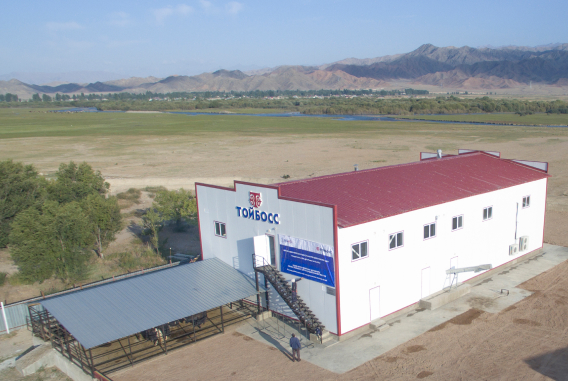 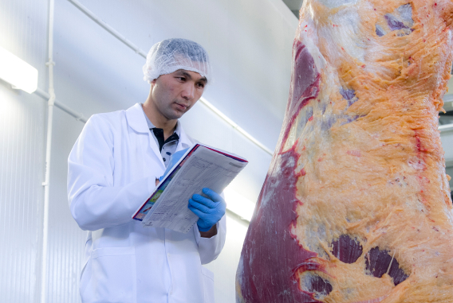
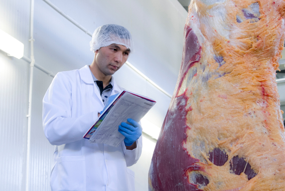
Предубойное содержание
Для идентификации скота предусмотрено его предубойное содержание количеством в 150 голов. С целью вывода ветеринарных препаратов из крови животных в течение от 21 до 30 дней наши специалисты проводят тщательное наблюдение и экологически чистый откорм. Животные, прошедшие контроль и выдержку, отправляются в помещение суточного содержания для взятия проб крови. Не прошедшие животные содержатся в карантинном блоке для лечения.
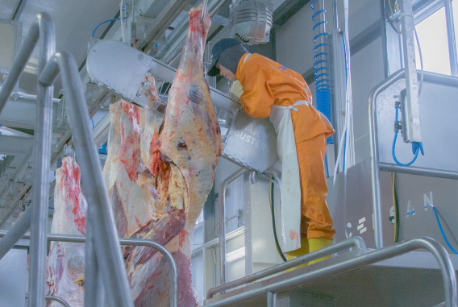 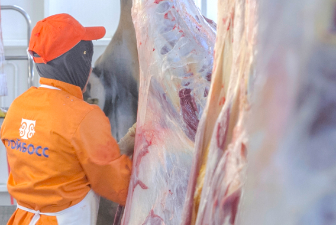